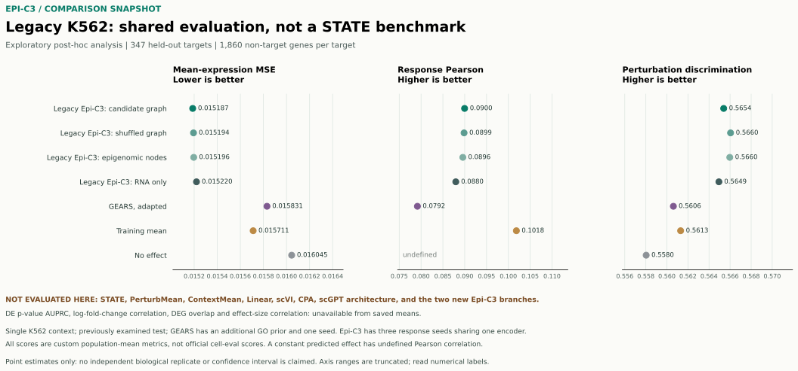

STATE
用户已确认项目为非商业用途并授权运行；官方环境正在准备。当前尚无同协议结果，且两种新模型尚未训练完成；使用时仍须遵守适用许可。
模型许可 ↗BENCHMARK / 2026.11.13 / STATIC SNAPSHOT
已在同一份旧 K562 测试参考上，对 Epi-C3 早期群体模型、适配版 GEARS 和简单基线进行探索性比较。两种新模型与 STATE 的正式同协议评测尚未完成。
01 / SHARED LEGACY REFERENCE
相同参考、基因轴和输入对照；不同方法的先验、训练和种子数并不相同，因此这是后验探索，不是公平盲测。

| 方法 | 均值 MSE ↓ | 响应 Pearson ↑ | 区分度 ↑ | 有效靶点 MSE / Pearson / 区分度 | 响应种子 |
|---|---|---|---|---|---|
| 正在读取本地数据；若未显示，请查看下方 JSON。 | |||||
候选图与打乱图结果接近，且仅两个测试靶点有直接候选图源覆盖；目前不能证明图结构有效。训练均值基线在响应 Pearson 上高于这些旧模型。无效应预测的表达变化为常数，因此 Pearson 未定义，不是零；其区分度不是“零分”，也不能证明模型学到了扰动。
冻结计划中的训练、验证、测试靶点分别为 1,041、347、347 个且互不相交。GEARS 使用额外 GO 先验和已知留出靶点、仅一个种子；旧 Epi-C3 的三个响应种子共享一个编码器。对照和批次跨靶点复用；没有独立生物学重复或置信区间。预测和参考分别减去各自的输入对照与参考对照；简单基线没有训练种子。
02 / COVERAGE
没有运行或无法计算的项目保持缺失，不以零代替，也不从论文截图估数后合并排名。
用户已确认项目为非商业用途并授权运行；官方环境正在准备。当前尚无同协议结果，且两种新模型尚未训练完成；使用时仍须遵守适用许可。
模型许可 ↗PerturbMean、ContextMean、Linear、scVI、CPA 和 scGPT architecture 均未在本对比的共同协议下评测。这里的训练均值不是论文中的 PerturbMean 或 ContextMean。
共享 RNA 基础模型仍在训练；新调控网络分支和严格同细胞三模态分支尚无正式扰动预测成绩。上图是旧模型，不是这两个新模型。
GEARS 已列在上图，但属于先前结果查看后增加的适配版；不能等同于论文原始运行。Parse-PBMC、Tahoe-100M 和其他 Replogle 细胞系的完整同协议比较均未完成。
| 模型 | 输入与目标 | 当前状态 |
|---|---|---|
| STATE | 以细胞表达状态与扰动条件预测响应；论文评估涵盖化学、信号和遗传扰动。 | 已有公开方法；本项目尚未运行或在相同划分上评分。 |
| 新 Epi-C3 · 调控网络 | 共享 RNA 编码加候选基因调控网络与基因扰动，探索网络引导的联动预测。 | 原型，依赖未完成的共享基础模型，尚无正式扰动成绩。 |
| 新 Epi-C3 · 同细胞三模态 | 同一细胞的 RNA、ATAC 与染色质接触联合编码，加基因扰动及方向。 | 响应头未训练；至少三个合格、逐细胞配对的细胞系尚未核实。 |
03 / METRICS & NEXT BENCHMARK
下列 K562 指标参考图中的评测思路，但使用自定义群体均值算法；不是官方 cell-eval 结果。
| 指标 | 本次定义与限制 |
|---|---|
| 均值表达 MSE | 每个靶点去掉其自身基因后，对预测与参考的群体平均对数表达求均方误差，再对靶点取平均。越低越好。 |
| 响应 Pearson | 对每个靶点分别计算预测均值减输入对照、参考均值减参考对照，在非靶点基因上求 Pearson，再对有效靶点取平均。常数向量未定义。 |
| 扰动区分度 | 预测响应与所有真实响应按欧氏距离排序，去掉对应靶点基因；分数为 1 减去零起始的平均并列名次除以靶点数。并列按平均名次处理，定义与官方实现不完全相同。 |
| DE 与效应量 | 当前只保存了群体均值，无法据此计算逐细胞差异表达 P 值 AUPRC、logFC Spearman、DE 重叠或基于显著 DE 基因数的效应量 Spearman；这些均未计算。 |
旧 Tahoe 模型曾使用官方 cell-eval 0.8.2 试算 9 个条件：平均表达 MSE 为 0.011904，无效应为 0.010371；响应 Pearson 分别为 -0.039125 和 -0.013795。每条件仅 5–10 个独立预测 parent，多个 DE 指标只有 1–3 个条件有效，或不具信息量。这是另一数据集和协议，不应与上图数值直接排名。
Tahoe 汇总与有效条件数 ↗先完成两种新模型和训练数据暴露审计，再冻结统一训练、验证、低代表性情境测试划分、基因轴、对照与预处理；在各模型许可允许的前提下运行 STATE 及其他基线，保存单细胞预测，使用相同版本的官方 cell-eval 和差异表达设置，并报告有效条件数和独立重复。完成前不发布跨方法总排名。